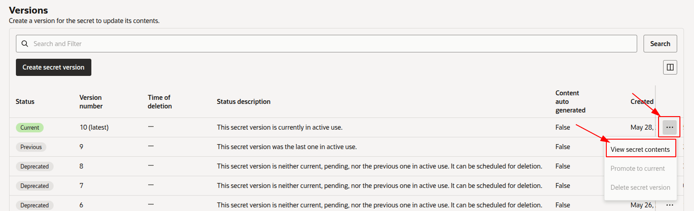

OpenVidu Elastic installation: Oracle Cloud Infrastructure#
Oracle Cloud Infrastructure
Info
OpenVidu Elastic is part of OpenVidu PRO. Before deploying, you need to create an OpenVidu account to get your license key. There's a 15-day free trial waiting for you!
This section describes how to deploy a production-ready OpenVidu Elastic instance on Oracle Cloud Infrastructure (OCI). The deployed services are identical to those in the On Premises Elastic installation, but are provisioned as OCI resources and the process is fully automated using the Terraform CLI.
- OCI Object Storage (S3-compatible via Customer Secret Keys) is used for storing application data and recordings.
- OCI Vault is used to securely store deployment secrets.
- Media Node scale-out is handled automatically by the OCI Instance Pool autoscaling configuration based on system load, and scale-in is delegated to an OCI Function that performs a graceful drain before terminating the instance. You can also use a fixed number of Media Nodes.
Prerequisites#
- An Oracle Cloud Infrastructure account with permissions to create Compute instances, VCNs, Object Storage buckets, Vaults, Functions and IAM resources.
- Terraform CLI installed on your machine.
- Git installed on your machine.
The deployment architecture is as follows:
- The Master Node acts as a Load Balancer, managing traffic and distributing it among the Media Nodes and the services running on the Master Node itself.
- The Master Node has its own Caddy server acting as a Layer 4 (for TURN with TLS and RTMPS) and Layer 7 (for OpenVidu Dashboard, OpenVidu Meet, etc., APIs) reverse proxy.
- WebRTC traffic (SRTP/SCTP/STUN/TURN) is routed directly to the Media Nodes.
- Scale-out is performed automatically by the OCI Instance Pool autoscaling configuration based on the average CPU of the pool. Scale-in is delegated to an OCI Function that gracefully drains the target Media Node before terminating it.
Custom scale-in strategy#
Scale-out is handled natively by the OCI Instance Pool autoscaling configuration, which adds Media Nodes when the pool's average CPU exceeds scaleTargetCPU. Scale-in, however, uses a custom strategy to enable the graceful shutdown of Media Nodes, ensuring that active Rooms are never disrupted when the cluster removes a Media Node.
- An OCI Function is deployed and triggered on a regular schedule. It polls the average CPU of the Instance Pool against
scaleTargetCPUand never scales the pool belowminNumberOfMediaNodes, and when a scale-in decision is made, the target Media Node is flagged as "draining" so it stops accepting new Rooms. - Each Media Node runs a
systemddaemon that periodically checks whether the instance has been marked as "draining". If so, the graceful shutdown script is triggered, which waits for all active Rooms on that node to end before shutting the instance down.
Publishing the scale-in function image#
The OCI Function that performs graceful Media Node scale-in runs from a container image that must be hosted in an OCI Registry (OCIR) in the same region as the Function. Because of this regional constraint, the scale_in_function_image parameter is mandatory: you must make the scale-in image available in an OCIR in your deployment's region and point the parameter to it.
Info
If you are deploying in the Madrid region (mad.ocir.io), you can skip this section entirely. OpenVidu already publishes the scale-in image in the Madrid OCIR, so you only need to set scale_in_function_image = "mad.ocir.io/axp2ice0s7el/openvidu-oci-scalein:3.8.0" (the value that was previously used as the default). The steps below are only required when deploying in any other region.
OpenVidu publishes a prebuilt scale-in image on Docker Hub, so there are two ways to get it into your OCIR. Pick the one that best fits your needs:
Pull the prebuilt image that OpenVidu publishes on Docker Hub and push it, unchanged, to your own OCIR.
-
Pull the image from Docker Hub:
-
Authenticate Docker against your OCI Registry. You will need an OCI Auth Token for the user you log in with:
Replace
<region-key>with the OCIR region code (for examplefrafor Frankfurt,iadfor Ashburn,madfor Madrid).Replace
<username>with the value matching your authentication setup — the exact format depends on whether your tenancy uses identity domains, federation with IDCS, or local IAM users. See Pushing Images Using the Docker CLI for the exact pattern in each case (typical forms are<username>,<identity-domain>/<username>, ororacleidentitycloudservice/<email>). -
Tag the pulled image for your OCIR. The tag must follow the format
<region-key>.ocir.io/<tenancy-namespace>/<repo>:<tag>: -
Push the image to your OCIR:
-
Set
scale_in_function_imageinterraform.tfvarsto the image reference you just pushed:
Build the scale-in function image yourself from the OpenVidu sources and push it to your OCIR — useful if you want to pin or customise the build. This requires the openvidu-oracle repository cloned (see Deployment details).
-
From the cloned
openvidu-oraclerepository, navigate to the scale-in function source directory: -
Authenticate Docker against your OCI Registry. You will need an OCI Auth Token for the user you log in with:
Replace
<region-key>with the OCIR region code (for examplefrafor Frankfurt,iadfor Ashburn,madfor Madrid).Replace
<username>with the value matching your authentication setup — the exact format depends on whether your tenancy uses identity domains, federation with IDCS, or local IAM users. See Pushing Images Using the Docker CLI for the exact pattern in each case (typical forms are<username>,<identity-domain>/<username>, ororacleidentitycloudservice/<email>). -
Build and tag the image. The tag must follow the format
<region-key>.ocir.io/<tenancy-namespace>/<repo>:<tag>: -
Push the image to OCIR:
-
Set
scale_in_function_imageinterraform.tfvarsto the image reference you just pushed:
Info
Make sure the OCI Function's compartment has the IAM policies needed to pull from the target repository. If the repository lives in a different tenancy from the OCI Function, see Pulling Images from Repositories in other Tenancies for the required Endorse/Admit/Define policy statements.
Deployment details#
-
Clone the OpenVidu repository containing the Terraform files:
-
Copy
terraform.tfvars.exampletoterraform.tfvars, update the required parameters with your values, and adjust any optional defaults as needed.
Information about parameters
Mandatory Parameters
Input Value Description tenancy_ocidOCI Tenancy OCID. Required for the Object Storage namespace. compartment_ocidOCI Compartment OCID where resources will be created. user_ocidOCI User OCID used to create Customer Secret Keys for S3-compatible access to Object Storage. stackNameStack name for the OpenVidu deployment. openviduLicenseOpenVidu PRO license key. Visit https://openvidu.io/account to obtain your license. scale_in_function_imageOCIR image URL consumed by the OCI Function that handles graceful Media Node scale-in. There is no default value — you must publish this image to an OCI Registry in your deployment's region and point this parameter to it. See Publishing the scale-in function image. Ignored when fixedNumberOfMediaNodes > 0.Optional Parameters
Input Value Default Value Description region"eu-frankfurt-1"OCI region where resources will be created. availability_domain1Availability Domain number (1, 2, or 3) to use for resources. masterNodeShape"VM.Standard.E4.Flex"OCI Compute shape for the OpenVidu Master Node. masterNodeOcpus2Number of OCPUs for the Master Node (applies to Flex shapes only). masterNodeMemory8Memory in GB for the Master Node (applies to Flex shapes only). masterNodeDiskSize100Boot disk size in GB for the Master Node. mediaNodeShape"VM.Standard.E4.Flex"OCI Compute shape for the OpenVidu Media Nodes. mediaNodeOcpus3Number of OCPUs for each Media Node (applies to Flex shapes only). mediaNodeMemory4Memory in GB for each Media Node (applies to Flex shapes only). mediaNodeDiskSize100Boot disk size in GB for the Media Nodes. fixedNumberOfMediaNodes0If > 0, deploys a fixed number of Media Nodes with no autoscaling and no scale-in OCI Function (initialNumberOfMediaNodes,minNumberOfMediaNodes,maxNumberOfMediaNodes,scaleTargetCPUandscale_in_function_imageare ignored). If0(default), the deployment is elastic and autoscaling is enabled.initialNumberOfMediaNodes1Initial number of Media Nodes to deploy. Ignored when fixedNumberOfMediaNodes > 0.minNumberOfMediaNodes1Minimum number of Media Nodes the autoscaling Instance Pool will keep running. Ignored when fixedNumberOfMediaNodes > 0.maxNumberOfMediaNodes5Maximum number of Media Nodes the autoscaling Instance Pool can launch. Ignored when fixedNumberOfMediaNodes > 0.scaleTargetCPU50Target CPU percentage. The Instance Pool autoscaling triggers scale-out above this threshold; the OCI Function triggers graceful scale-in when usage falls below it. Ignored when fixedNumberOfMediaNodes > 0.certificateType"letsencrypt"Certificate type for the OpenVidu deployment. Options: selfsigned- Not recommended for production use. Intended for testing or development environments only. A FQDN is not required.owncert- Suitable for production environments. Uses your own certificate. A FQDN is required.letsencrypt- Suitable for production environments. Can be used with or without a FQDN (if no FQDN is provided, the public IP is used as the domain name and a Let's Encrypt certificate is issued for it).
domainName(none)Domain name for the OpenVidu deployment. Optional — if not provided, the public IP is used as the domain name. ownPublicCertificate(none)If the certificate type is owncert, this parameter specifies the public certificate in base64 format.ownPrivateCertificate(none)If the certificate type is owncert, this parameter specifies the private certificate in base64 format.initialMeetAdminPassword(none)Initial password for the adminuser in OpenVidu Meet. Alphanumeric characters, underscores or hyphens only (A-Z, a-z, 0-9, _, -). If not provided, a random password will be generated.initialMeetApiKey(none)Initial API key for OpenVidu Meet. Alphanumeric characters, underscores or hyphens only (A-Z, a-z, 0-9, _, -). If not provided, no API key will be set; one can be configured later from the Meet Console. bucketName(none)Name of the OCI Object Storage bucket for application data and recordings. If left empty, a bucket will be created with a default name. rtcEngine"pion"WebRTC media engine to use. Options: pion- Default media engine.mediasoup- Alternative media engine with different performance characteristics.
vault_ocid(none)OCI KMS Vault OCID for secrets management. If left empty, a new vault will be created. key_ocid(none)OCI KMS Key OCID for secrets management. If left empty, a new key will be created. additionalInstallFlags(none)Additional optional flags to pass to the OpenVidu installer (comma-separated, e.g., --flag1=value, --flag2). -
Deploy with Terraform using the following commands:
-
Logs will appear in the
terraform applyconsole output. Wait for it to finish and displayApply Complete!. Then go to OCI Object Storage and wait for the SSH key to appear in your configured bucket.Warning
After downloading the SSH key, it is strongly recommended to DELETE IT from the bucket. This file is the private key used to access the Master Node — if exposed, unauthorized users could gain access.
-
Set the correct permissions on the SSH key so it can be used.
Access OpenVidu#
To verify that your OpenVidu deployment is working correctly, check the credentials in the OCI Vault Secrets Manager.
- Navigate to the OCI Secrets Manager in the OCI Console.
- Click the secret you want to view.
-
Scroll down to "Versions", click the "3 dots" menu next to the current version, and select "View secret contents".

Warning
Click "Show decoded Base64 digit" to see the actual value of the secret.
SSH into the Master Node by running the following command from the directory where your SSH key is located:
Then navigate to /opt/openvidu/config/ where you will find all credentials in the following files:
openvidu.envmeet.env
Open OPENVIDU_URL and you will see the OpenVidu Meet interface.
Log in with MEET_INITIAL_ADMIN_PASSWORD to start using OpenVidu Meet.
Configure your application to use the deployment#
To configure your OpenVidu application, you will need your OCI credentials. You can retrieve them by following the steps in View OpenVidu credentials in the Web or View OpenVidu credentials in the instance.
Your authentication credentials and the URL to point your applications to are:
OpenVidu Meet:
OPENVIDU_URL: The URL used to access OpenVidu Meet, alwayshttps://yourdomain.example.io/.MEET_INITIAL_ADMIN_USER: The user account for accessing the OpenVidu Meet Console. Alwaysadmin.MEET_INITIAL_ADMIN_PASSWORD: The password for accessing the OpenVidu Meet Console.MEET_INITIAL_API_KEY: The API key for using the OpenVidu Meet Embedded and OpenVidu Meet REST API.
Note
MEET_INITIAL_ADMIN_USER, MEET_INITIAL_ADMIN_PASSWORD, and MEET_INITIAL_API_KEY are initial settings only. Changing them here will not affect the deployment — they can only be modified from the Meet Console.
OpenVidu Platform:
LIVEKIT_URL: The URL used with LiveKit SDKs. This can be eitherwss://yourdomain.example.io/orhttps://yourdomain.example.io/, depending on the client library you are using.LIVEKIT_API_KEY: The API key for LiveKit SDKs.LIVEKIT_API_SECRET: The API secret for LiveKit SDKs.
Troubleshooting initial Oracle Cloud Infrastructure deployment#
If something goes wrong during the initial Oracle Cloud Infrastructure deployment, you will not be able to reach the OPENVIDU_URL. This can happen due to a misconfiguration in the parameters, insufficient permissions, or a problem with OCI services. The steps below will help you troubleshoot the issue and identify the root cause:
- Check whether the instance is running. If it is not, review the output of the
terraform applycommand for any errors. -
If the instance is running, SSH into it and inspect the logs by running the following command:
These logs contain detailed information about the Oracle Cloud Infrastructure deployment process.
-
If everything appears to be in order, check the status and logs of the installed OpenVidu services on the Master Node and Media Nodes.
Configuration and administration#
Once OPENVIDU_URL is reachable, the deployment is complete and working. See the Administration section to learn how to manage your OpenVidu Elastic deployment.